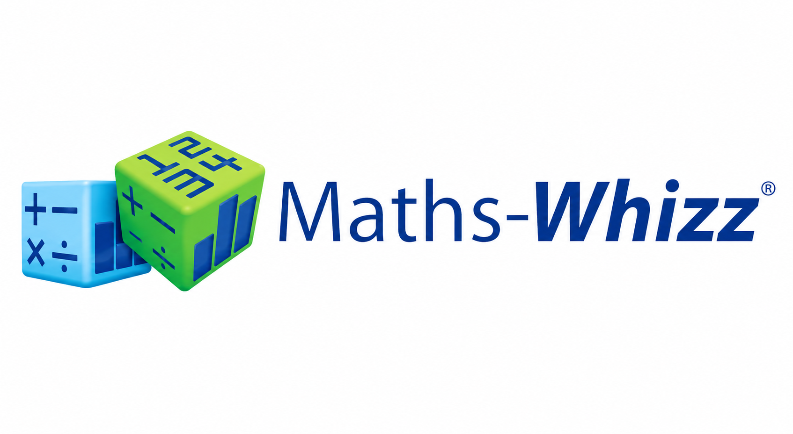

Current partner
Maths-Whizz by Whizz Education
Kington Education is the official UK distribution partner for Maths-Whizz, bringing Whizz Education's award-winning AI maths tutor to primary and secondary schools across the UK.
We've partnered with Maths-Whizz
Kington Education is the official UK partner for Maths-Whizz, the AI learning platform by Whizz Education, bringing it to schools and MATs across the country.
Prefer a live walkthrough instead? Book a 15-min call →
See how over 1 million pupils are getting their own maths path
A quick overview of how Maths-Whizz works and the difference it makes. No sign-up needed.
We'll personally put together a Maths-Whizz walkthrough tailored to your school and send it across as soon as we can.
Prefer a live call? Book 15 min →Why schools choose Maths-Whizz
Research by Whizz Education, conducted with over 12,000 students and verified by independent experts, found that students using Maths-Whizz for 45–60 minutes a week increased their Maths Age by an average of
in the first year of use.
National Curriculum aligned from Reception to Year 8. Drops straight into your existing scheme of work, no replanning needed.
Every pupil starts with an adaptive assessment. Maths-Whizz identifies exactly where each child is and builds a personalised learning path from there.
Teachers see exactly who is on track, who is struggling, and who has not logged in. No chasing data. It is all in the dashboard.
Maths-Whizz marks its own work, adapts its own lessons, and generates its own reports. Teachers set it running and focus on teaching.
The process
Fill in the short form above and we'll send a personalised Maths-Whizz walkthrough straight to your inbox. Takes 60 seconds.
If the demo looks right for your school, book a short call. Paul will answer your questions and talk through how Maths-Whizz would work in your setting.
Schools that want to go ahead begin with complimentary access to the full platform. Only if you choose to continue do you move to a tailored paid plan, agreed directly with Maths-Whizz.
What schools say
Whizz Education has become a true learning partner for us at Crofty MAT. Their focused approach helps us identify gaps, scaffold teaching, and accelerate progress — especially for disadvantaged and high-attaining pupils.
In just 60 minutes per week, pupils can make 18 months' progress — and we've genuinely seen this over six years. Maths-Whizz runs itself, so there's no pressure on teachers to mark work.
Maths-Whizz has been a success from the start — we trialled it with Year 6, then rolled it out to all 245 pupils. The dashboard makes it easy to see who has spent time but not made progress.
Book a 15-minute call, or have a personalised demo sent straight to your inbox.
Schools worldwide
Students using Maths-Whizz
Winner
What is Maths-Whizz?
Maths-Whizz gives schools two complementary products, both included in the same platform.
Product 1
An AI-driven adaptive maths tutor that works one-to-one with each student. It assesses their level, sets a personalised learning path, adapts in real time as they progress, and builds confidence by filling gaps before moving on. Students get the equivalent of individual attention every session, without any extra work for the teacher.
Product 2
A ready-to-use library of interactive animated lessons, printable worksheets, enrichment tasks, and classroom activities, all organised by topic and year group. Teachers can plan, deliver, and differentiate maths lessons quickly, with no need to build materials from scratch.
How the Virtual Tutor works
Why use the Virtual Tutor?
The challenge for any teacher is to consistently give extra attention to every student within the school day. Maths-Whizz supports teachers by providing regular differentiated instruction to each student, identifying and filling learning gaps and preparing every student for success in the classroom.
Covers Reception to Year 8, one platform for your whole primary school or lower secondary intervention groups.
Works at home as well as in school. Pupils log in anywhere, making it easy to hit the 45–60 minutes a week that drives results.
Live dashboard shows you which pupils are on track, which need attention, and who has not logged in. No chasing data.

Teachers' Resource
A rich library of interactive animated lessons, structured classroom activities, printable worksheets, enrichment tasks, and consolidation materials, all organised by topic and year group to save time and ensure consistency.
1,200+ activities and worksheets covering the National Curriculum
Reinforce fundamental concepts, extend challenge for advanced learners, and support assessment, all from one place.
Supports whole-class teaching, small-group intervention, and individual learning. Plan, deliver, and adapt maths lessons with confidence.

See it in action
Fits your scheme of work
"Our mission is to enable schools across the UK to access and integrate the latest technology, enriching education and improving outcomes for every student."
Our journey
Founded in Kington, our story began with a simple goal: to help schools access technology that genuinely enhances learning. What started as a local initiative has grown into partnerships with leading EdTech companies across the UK, connecting innovative solutions with schools that want real results.
Our journey continues as we work to bridge the gap between technology and teaching, ensuring every school can benefit from tools that inspire both educators and learners.
Who we serve
We support UK school decision-makers and teachers who are adopting EdTech solutions to enhance learning. From individual teachers to whole-school implementations, we provide the support you need.
Our values
An unwavering passion for education fuels our work. This commitment ensures every product we take on is not just technologically advanced, but deeply dedicated to inspiring, engaging, and driving meaningful change in the classroom.
Our product philosophy is driven by excellence in outcomes. We ensure our solutions are designed to deliver and evidence the positive results that truly matter, making student achievement the ultimate measure of product quality.
We make it a priority to ensure our products are easily accessible and seamlessly integrate into classrooms, removing friction so teachers can focus on teaching.
Our solutions are designed to actively drive forward new teaching models, fostering continuous growth and ensuring educators and students are always at the leading edge.
We believe every learner deserves access to high-quality educational resources. Our products are designed to remove barriers, adapt to diverse needs, and support all students regardless of background, ability, or learning style.
We see every school relationship as a long-term partnership built on trust, transparency, and collaboration. From implementation to ongoing support, we're committed to helping schools achieve their goals and grow with confidence.
Find us
We are based in Kington, a market town in Herefordshire, on the English–Welsh border.
Open in Google Maps →Based in Kington, UK
For more information or to start a conversation, drop us a line.
What we bring
Established relationships with schools and MATs who already know and trust us.
Active, in-region representation that gets your product in front of decision-makers.
We speak the language of pedagogy and procurement, and represent you credibly.
Our distribution partners

Current partner
Kington Education is the official UK distribution partner for Maths-Whizz, bringing Whizz Education's award-winning AI maths tutor to primary and secondary schools across the UK.
For EdTech innovators
We're always looking for the next great EdTech product to bring to UK schools. If you have a solution that could make a real difference to teachers and pupils, we'd love to hear from you.
Email us →Partner with us
Innovative partnerships that put great products in front of the schools that need them.
Contact · Book a demo
Watch the demo, or talk to us. Whichever you pick takes under a minute. No pressure, no jargon.
We'll personally put together a Maths-Whizz walkthrough tailored to your school and send it across as soon as we can. Prefer a live demo in the meantime?
Book a 15-min call →② Talk to us · calendar booking
Prefer a person? Grab a 15-minute slot and we'll walk you through Maths-Whizz and answer any questions.
Pick a time that suits you
15 minutes · no preparation needed
Talk to Paul
Real people, no scripts
Confirmation sent instantly
Calendar invite straight to your inbox
Opens our booking calendar in a new tab
Current project
We are offering a small number of primary and secondary schools complimentary access to the full Maths-Whizz platform for the remainder of the 2025/26 academic year, with no obligation to continue afterwards.
In return, we ask for anonymised, aggregate usage and progress findings and practical feedback on how Maths-Whizz performed in your setting. No pupil names or personal data are requested or shared.
Places on the 2025/26 pilot are limited. Request yours from the home page.